原文连接:https://www.cnblogs.com/KillBugMe/p/11847660.html
目录
你可能已经很熟练使用这两个灵活的单位，但你可能不完全了解何时使用 rem ，何时使用 em。 本教程将帮你弄清楚!
Em 和 rem都是灵活、 可扩展的单位，由浏览器转换为像素值，具体取决于您的设计中的字体大小设置。 如果你使用值 1em 或 1rem，它可以被浏览器翻译成 从16px到 160px 或其他任意值。
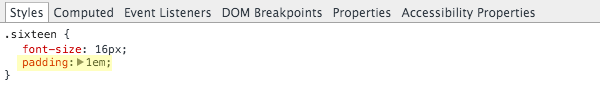
CSS 边距设置为 1em

浏览器翻译成16px
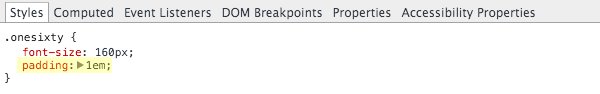
CSS padding设为 16px
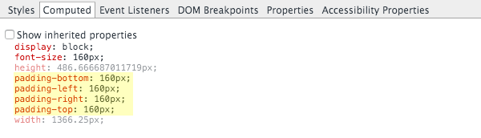
浏览器翻译成160px
另一方面，浏览器使用 px 值，所以 1px 将始终显示为完全 1px。
滑动滑块试试这个 CodePen 例子，你可以看到rem 和 em 单位的值可以转化为不同的像素值，而 px 单位保持固定大小:
最大的问题是
使用 em 和 rem 单位可以让我们的设计更加灵活，能够控制元素整体放大缩小，而不是固定大小。 我们可以使用这种灵活性，使我们在开发期间，能更加快速灵活的调整，允许浏览器用户调整浏览器大小来达到最佳体验。
Em 和 rem 单位提供的这种灵活性和工作方式都很相似，所以最大的问题是，我们何时应使用 em 值，何时应使用 rem 值呢?
主要区别
Em 和 rem 单位之间的区别是浏览器根据谁来转化成px值 理解这种差异是决定何时使用哪个单元的关键。
我们要通过复习 rem 和 em 单位如何工作，来确保你知道每一个细节。 然后我会讲到为什么你应该使用 em 或 rem 的单位。
最后，我们会看看到底哪些典型元素的设计，你应该在实际应用中使用哪种类型的单位。
rem 单位如何转换为像素值
当使用 rem 单位，他们转化为像素大小取决于页根元素的字体大小，即 html 元素的字体大小。 根元素字体大小乘以你 rem 值。
例如，根元素的字体大小 16px，10rem 将等同于 160px，即 10 x 16 = 160。
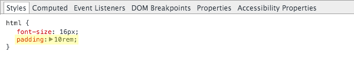
CSS padding设置为 10rem
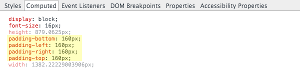
计算结果为160px
em 单位如何转换为像素值
当使用em单位时，像素值将是em值乘以使用em单位的元素的字体大小。
例如，如果一个 div 有 18px 字体大小，10em 将等同于 180px，即 10 × 18 = 180。
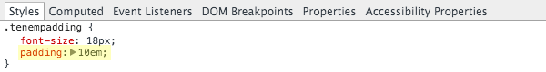
CSS padding设置为 10em
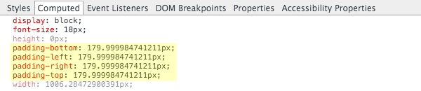
计算到 180px (或接近它)
重点理解:
有一个比较普遍的误解，认为 em 单位是相对于父元素的字体大小。 事实上，根据W3标准 ，它们是相对于使用em单位的元素的字体大小。
父元素的字体大小可以影响 em 值，但这种情况的发生，纯粹是因为继承。 让我们看看为什么以及如何起作用。
Em 单位的遗传效果
使用 em 单位存在继承的时候，情况会变得比较棘手，因为每个元素将自动继承其父元素的字体大小。 继承效果只能被明确的字体单位覆盖，比如px,vw
使用 em 单位的元素字体大小根据它们来定。 但该元素可能继承其父元素的字体大小，而父元素又继承其父元素的字体大小，等等。 因此，以 em 为单位的元素字体大小可能会受到其任何父元素的字体大小影响。
让我们看看一个例子。 在下面的 CodePen单步执行试试。 随着你的前进，使用 Chrome 开发工具或 Firebug 为火狐浏览器来检查我们的 em 单位计算到的像素值。
Em 继承的例子
如果我们的根元素字体大小为 16px (通常是默认值) 一个子元素 div 里面padding值为 1.5em，该 div 将从根元素继承字体大小 16px。 因此padding会翻译成 24px，即 1.5 x 16 = 24。
如果我们加多一个div来包裹原先的div，然后设置其字体大小为 1.25em呢?
我们包裹的 div 继承根元素字体大小 16px ，并乘以它自己的 1.25em 的字体大小。 这将设置包裹 div 字体大小为 20px，即 1.25 x 16 = 20。
现在我们原始的 div 不再直接从根元素继承,而是从其新的父元素继承字体大小为 20px 1.5em 其padding值现在等于 30px，即 1.5 x 20 = 30。
这个继承效应可以更复杂，如果我们向我们原始的 div 添加 em 字体单位，比方说 1.2em。
Div 从其父级继承 20px 字体大小，然后，乘以它自己的 1.2em 设置，给它 24px，即 1.2 × 20 = 24 新字体大小。
div上的1.5em padding 现在将再次改变大小，用新的字体大小，36px，即 1.5 × 24 = 36 。
最后，为了进一步说明那个 em 单位是相对于他们最终获得(不是父元素)的字体大小，让我们来看看设置padding 1.5em 如果我们显式设置 div 使用 14px值，不继承字体大小会发生什么。
现在，我们的padding为 21px，即 1.5 x 14 = 21 已经变小了。 它不受父元素的字体大小。
由于存在着这些隐患，你可以看到为什么必须知道如何正确管理使用 em 单位。
浏览器设置 HTML 元素字体大小的影响
默认情况下浏览器通常有字体大小 16px，但这可以被用户更改为从 9px 到 72px的任何值
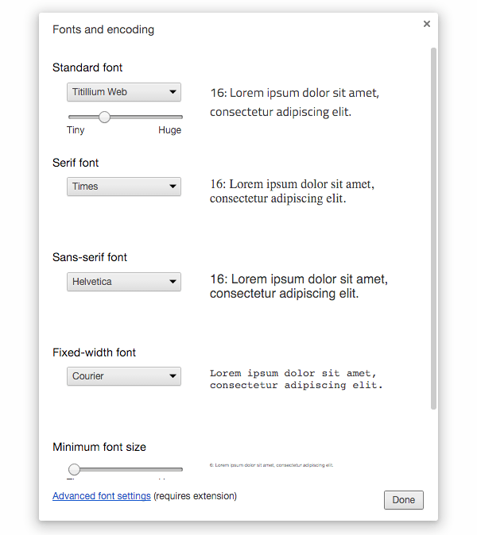
你需要知道的:
根 html 元素将继承浏览器中设置的字体大小，除非显式设置固定值去覆盖。
所以 html 元素的字体大小虽然是直接确定 rem 值，但字体大小可能首先来自浏览器设置。
因此浏览器的字体大小设置可以影响每个使用 rem 单元以及每个通过 em 单位继承的值。
没有设置 HTML 字体大小时，浏览器设置起作用
除非重写，否则它将继承浏览器默认设置的字体大小。 例如，让我们把网站的html元素没有设置font-size值。
如果用户让他们的浏览器默认字体大小为 16px，那么根元素字体大小将为 16px。 在 Chrome 开发工具下，你可以在已计算选项卡下看到一个元素继承的属性。
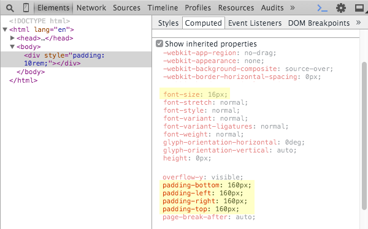
在这种情况下 10rem 等于 160px，即 10 x 16 = 160。
如果用户将其浏览器中的默认字体大小调为18px，根字体大小变成 18px。 现在 10rem 转换为 180px，即 10 × 18 = 180。
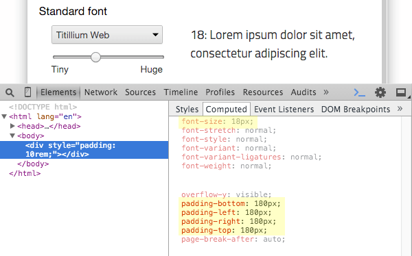
浏览器将调整使用 em 单位的 HTML 元素字体大小
当 em 单位设置在 html 元素上时，它将转换为em值乘以浏览器字体大小的设置。
例如，如果网站的 html 元素的字体大小属性设置为 1.25em，根元素字体大小将为 1.25 倍的浏览器的字体大小设置。
如果浏览器字体大小被设置为 16px，根字体大小会出来为 20px，即 1.25 x 16 = 20。
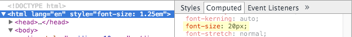
在这种情况下 10rem 将等于 200px，即 10 × 20 = 200。
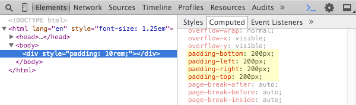
所以，如果浏览器字体大小被设置为 20px，根元素字体大小会翻译成 25px，即 1.25 × 20 = 25。
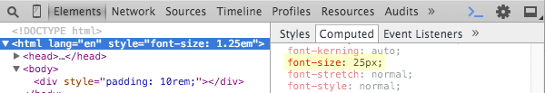
现在 10rem 将等于 250px，即 10 × 25 = 250。
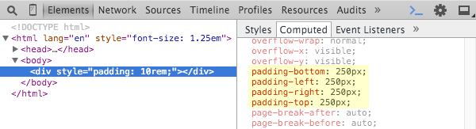
总结与 rem 差异 em
上述所有归结如下:
rem 单位翻译为像素值是由 html 元素的字体大小决定的。 此字体大小会被浏览器中字体大小的设置影响，除非显式重写一个具体单位。
em 单位转为像素值，取决于他们使用的字体大小。 此字体大小受从父元素继承过来的字体大小，除非显式重写与一个具体单位。
为什么使用 rem 单位:
Rem 单位提供最伟大的力量并不仅仅是他们提供一致尺寸而不是继承。 相反，它给我们的一个途经去获取用户的偏好来影响网站中每一处使用rem的元素大小，不再是使用固定的 px 单位。
为此，使用 rem 单位的主要目的应该是确保无论用户如何设置自己的浏览器，我们的布局都能调整到合适大小。
一个站点最初设计可以专注于最常见的默认浏览器中字体大小 16px。
浏览器字体大小 16px
但是，通过使用 rem 单位，如果用户调整其字体大小，我们也能保证布局的完整性，使用较小的文本避免文本空间被压扁了。
浏览器字体大小 34px
如果用户缩小其字体大小，整个布局掉下来，空白区域中的文本也不会想得很无力。
浏览器字体大小 9px
用户会因为各种各样的原因更改字体大小设置。 容纳这些设置可以获得更好的用户体验。
重要的是:
一些设计师使用结合 rem 单位的方式给html元素设置了一个固定的px单位。 这是很普遍的做法，所以改变html元素的字体大小时，可以使整个页面做相应调整
我强烈反对种做法，因为它重写继承了用户设置的浏览器字体大小。 更夸张的说，这剥削了用户自行调整以获得最佳视觉效果的能力。
如果您确实需要更改 html 元素的字体大小，那么就使用em，rem单位，这样根元素的值还会是用户浏览器字体大小的乘积。
这将允许您通过更改您的 html 元素的字体大小，调整你的设计，但仍会保留用户的浏览器设置的效果。
为什么使用 em 单位
em 单位取决于一个font-size值而非 html 元素的字体大小。
为此，em 单位的主要目的应该是允许保持在一个特定的设计元素范围内的可扩展性。
例如，您可能使用em 值设置导航菜单项的padding、 margin，line-height等值。
带有0.9rem 字体大小的菜单
通过这种方式，如果您更改菜单的字体大小菜单项周围的间距将在剩余的空间按比例缩放。
带有1.2rem 字体大小的菜单
前面一节中你看到跟踪 em 单位如何变得不可收拾。 为此，我建议只在你标识清楚的情况下使用 em 单位。
实际应用
一些 web 设计师之间存在辩论，我相信不同的人有不同的首选的方法，但我的建议是，如下所示。
使用 em 单位:
根据某个元素的字体大小做缩放而不是根元素的字体大小。
一般来说，你需要使用 em 单位的唯一原因是缩放没有默认字体大小的元素。
根据我们上面的例子，设计组件比如按钮，菜单和标题可能会有自己明确的字体大小。 当你修改字体大小的时候，你希望整个组件都适当缩放
通用属性这一准则将适用于在非默认字体大小的元素上的padding、 margin、 width、 height和line-height等值。
我建议，当您使用 em 单位，他们使用的元素的字体大小应设置对rem单位，以保留的可扩展性，但避免继承混淆。
通常不使用 em 单位控制字体大小
我们经常会看到使用em作为字体大小单位，特别是标题，当我认为如果使用rem将更具可扩展性。
标题经常使用 em 单位的原因是他们相比px单位，在相对常规文本大小方面更出色。 然而 rem 单位同样也可以实现这一目标。 如果 html 元素上任何字体大小调整，标题大小仍会缩放。
请尝试更改下面的 CodePen，看看 html 元素上的 em 字体大小如何起作用:
少部分情况下，我们不想我们的字体大小根据根元素做调整，只有几个例外的情况。
我们可以想到的例子是一个使用 em 字体大小的下拉菜单，我们有第二个级别的菜单项文本大小取决于第一级字体大小。 另一个例子可能是用在按钮里面的字体图标，字体图标的大小跟按钮的文本大小有关。
然而，大多数 web 设计中的元素往往不会有这种类型的要求，所以一般使用 rem 单位的字体大小，em 单位只在特殊的情况下使用。
使用 rem 单位:
不需要 em 单位，并且根据浏览器的字体大小设置缩放的任何尺寸。
这几乎在一个标准的设计中占据了一切，包括heights，widths，padding，margin，border，font-size，shadows，几乎包括你布局的每部分。
简单地说，一切可扩展都应该使用 rem 单位。
小贴士
创建布局时，往往要以像素为单位更方便，但部署时应使用rem单位。
你可以使用预处理比如Stylus / Sass / Less，来自动转换单位或PostCSS之类的插件。
或者，您可以使用 PXtoEM 手动做您的转换。
始终使用 rem 单位做媒体查询
特别注意，当使用 rem 单位创建统一可扩展的设计，媒体查询也应该是rem单位。 这将确保，无论用户浏览器的字体大小，您的媒体查询会对它作出反应和调整您的布局。
例如，如果用户缩放文本非常高，您的布局可能需要从两列到单个列调整，因为它可能会在较小的移动设备上显示。
如果您的断点在固定的像素宽度，只有不同的视口的大小可以触发它们。 但是基于 rem 的断点他们将响应不同的字体大小。
不要使用 em 或 rem :
多列布局
布局中的列宽通常应该是 %，因此他们可以流畅适应无法预知大小的视区。
然而单一列一般仍然应使用 rem 值来设置最大宽度。
例如:
.container {
width: 100%;
max-width: 75rem;
}
这保持列的灵活，可扩展。又能防止变得太宽了。
当元素应该是严格不可缩放的时候
在一个典型的 web 设计的过程中，不会有很多部分的你不能使用伸缩性设计的布局。 不过偶尔你会遇到真的需要使用显式的固定的值，以防止缩放的元素。
采用固定的尺寸值的前提应该是，如果被缩放的话，它的结构会被打碎。 这真的不常出现，所以你想拿出那些 px 单位之前，问问自己是否使用它们是绝对必要的。
总结
让我们以一个快速符号点概括我们介绍的内容:
- rem 和 em 单位是由浏览器基于你的设计中的字体大小计算得到的像素值。
- em 单位基于使用他们的元素的字体大小。
- rem 单位基于 html 元素的字体大小。
- em 单位可能受任何继承的父元素字体大小影响
rem 单位可以从浏览器字体设置中继承字体大小。
- 使用 em 单位应根据组件的字体大小而不是根元素的字体大小。
- 在不需要使用em单位，并且需要根据浏览器的字体大小设置缩放的情况下使用rem。
- 使用rem单位，除非你确定你需要 em 单位，包括对字体大小。
- 媒体查询中使用 rem 单位
- 不要在多列布局中使用 em 或 rem -改用 %。
不要使用 em 或 rem，如果缩放会不可避免地导致要打破布局元素。
我希望你现在已经建立了强健的、 完整的图片，到底 em 和 rem 的单位如何工作，并通过，知道如何最好地利用他们在你的设计中。
我鼓励您尝试为你自己使用本教程指南，它们会为您创建完全成熟的可伸缩性和响应性布局。